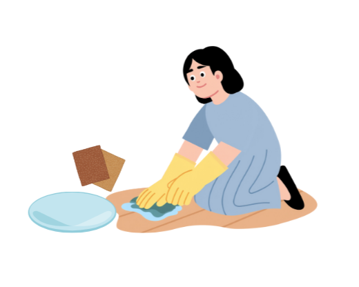
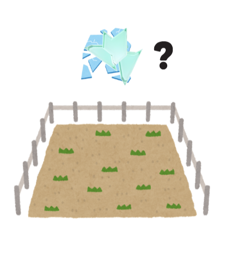
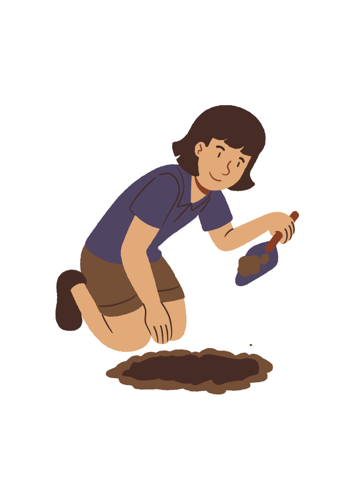
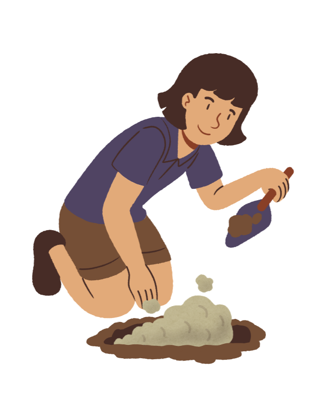
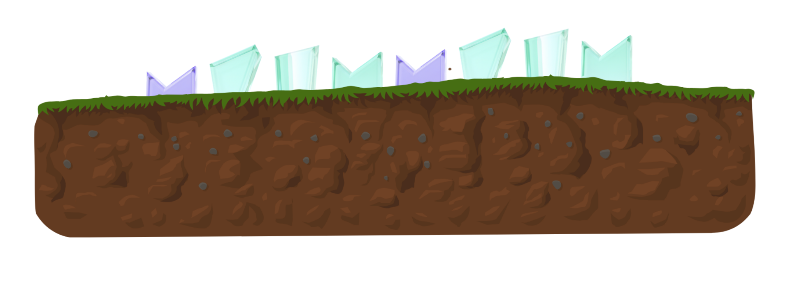
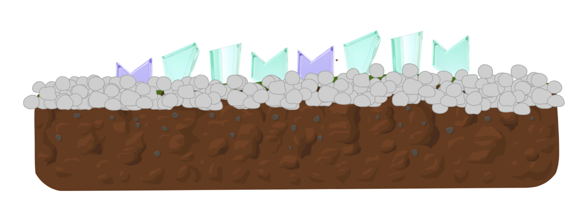

Flat glass pieces can be reused to create attractive and durable garden borders. This project adds visual interest to pathways or flower beds while keeping soil and mulch in place. Proper handling is important to ensure safety.

Prepare the glass. Clean the glass thoroughly. Smooth sharp edges using sandpaper or a stone. Always wear gloves.
Plan the border layout. Mark the edge of the garden bed or pathway where the glass will be placed.
Dig a shallow trench. Dig a trench about 8–10 cm deep along the marked line.
Add a base layer. Pour a thin layer of sand or fine gravel into the trench to help stabilize the glass.
Position the glass. Insert glass pieces vertically or slightly angled, spacing them evenly. Press them firmly into the sand.
Secure the border. Backfill with soil or gravel and tamp down gently. Use a rubber mallet if needed.